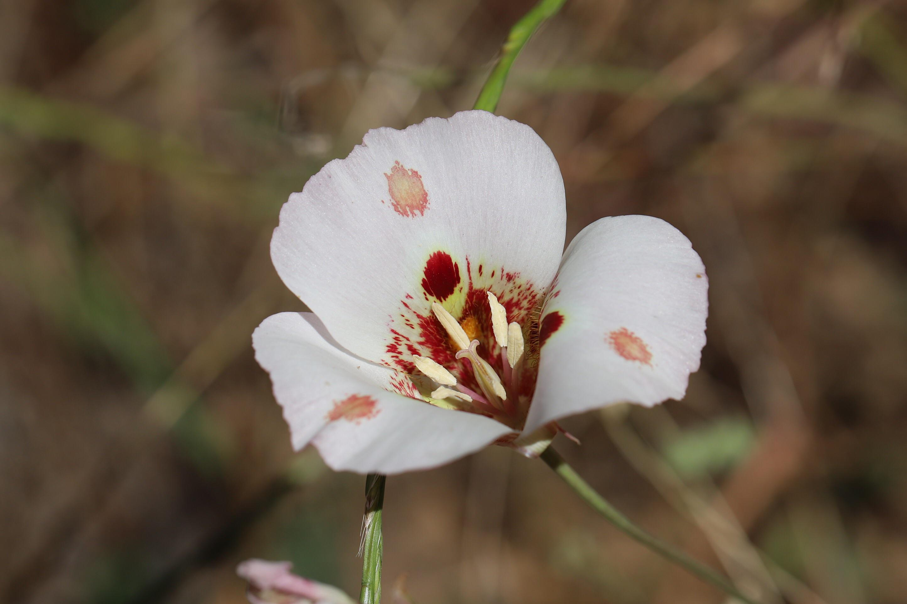

Not to be confused with the butterfly, the Mariposas flowers apperance is a simple bask of white with three symmetrical petals, decorated with pink-purplish highlights and a yellow center.
General Purpose
The Mariposa flowers (also known as Hedychium coronarium,) symbolism is deeply tied secret messages, especially during the spanish colonial times. Women would wear the mariposas to message with the fighting cuban soilders. Therefore, Mariposas represent purity, rebellion and freedom.
Mariposas have significant medical usage. In some evidences, mariposas are claimed to heal gastrointestinal damaged wounds as well as help with anti-inflammatory.

The aroma of a Mariposa is meant to help with the relaxtion of one's soul and offer tranquility through a troubled mind-which is quite similar to a hibiscus. The scent is much like taking a hike in the woods and letting nature be the one to relieve your stress.
Not only do these flowers have a mesmerizing scent, but they also have a mesmeric visual. Having one or more of these in your garden could draw in the apperance of its equivalent butterfly. Showing off one of these in your garden could show that you're finding restfulness, prosperity, or human love.
Unlike the other flowers covered, Mariposas tap into a more spiritual meaning. They have intertwined meanings with the blossoming experience of motherhood as well as the final stage of life. Despite this, the flwoers are mainly known to be a good essence and for the one owning them to be viewed with purity and peace.